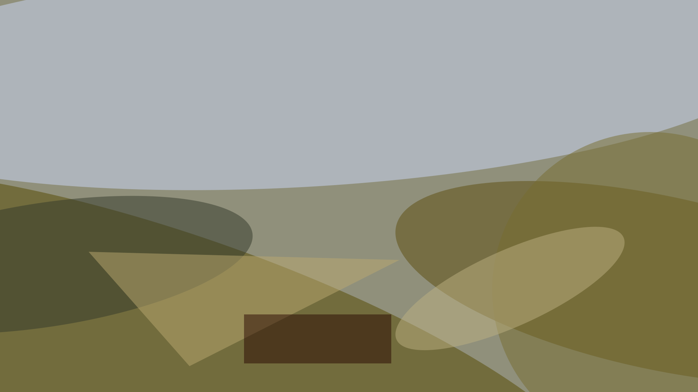
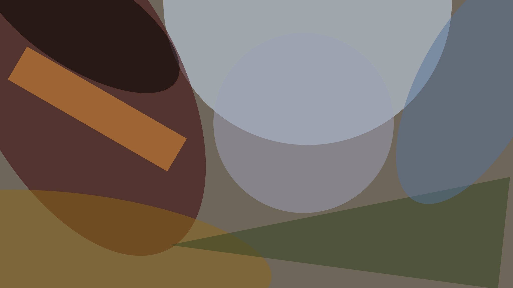
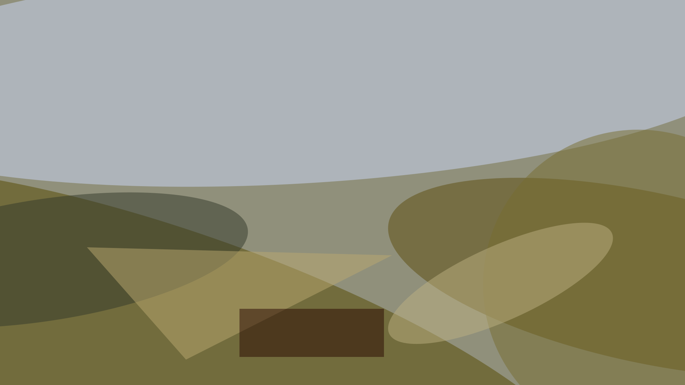
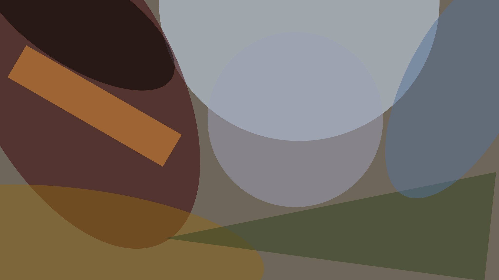
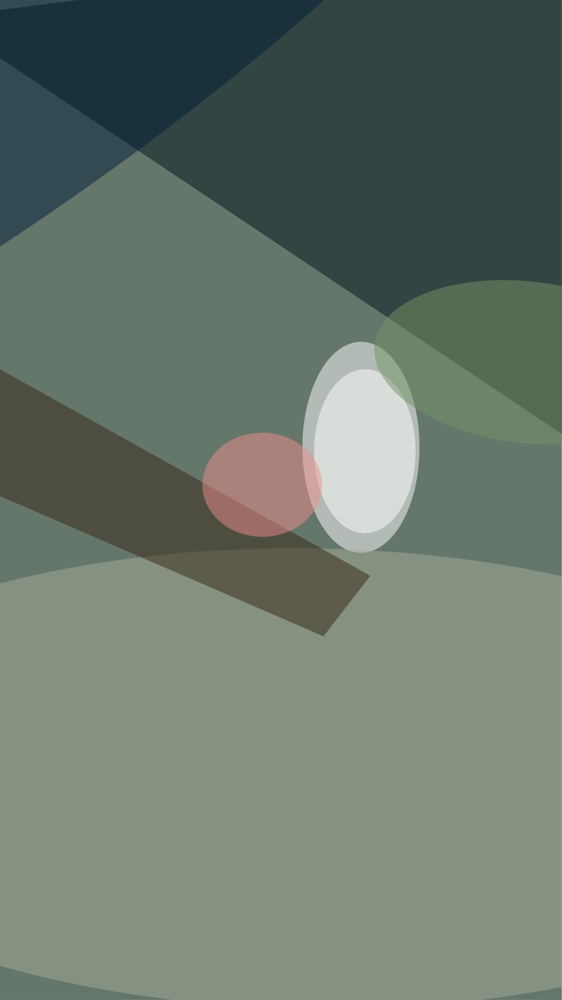
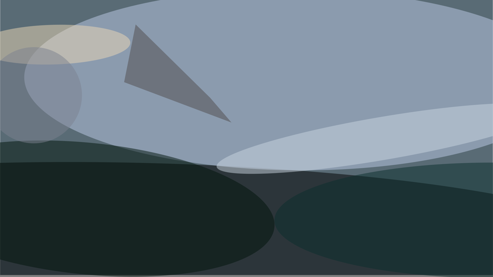
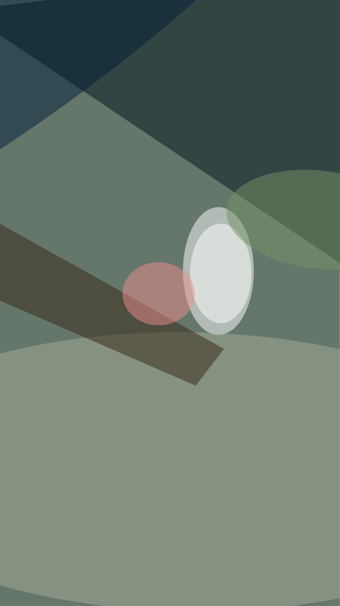
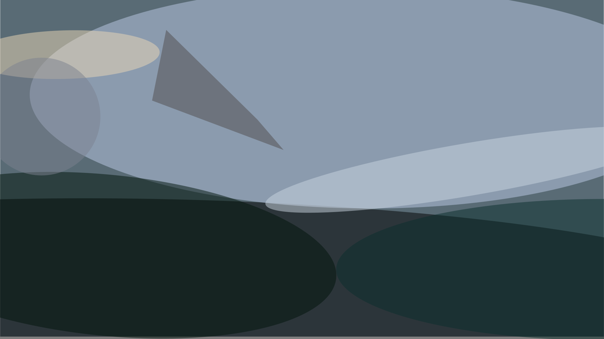

Last year, I took an epic journey across Europe. I created this page to show off the photos of some of the awsome places that I saw during my vacation.
The first awesome place I'd like to share with you is Plitvice Lakes in the middle of Croatia. These are natural waterfalls that you visit by walking on wooden platforms.

 



 



From the Alps, we made our way south to Italy, where we stayed in an old wheat silo (yes it was basically one big tall round room, with beds in a loft). On the rainy day, we did what any normal Pacific Northwesterner would do - we went for a day hike in the mountains!